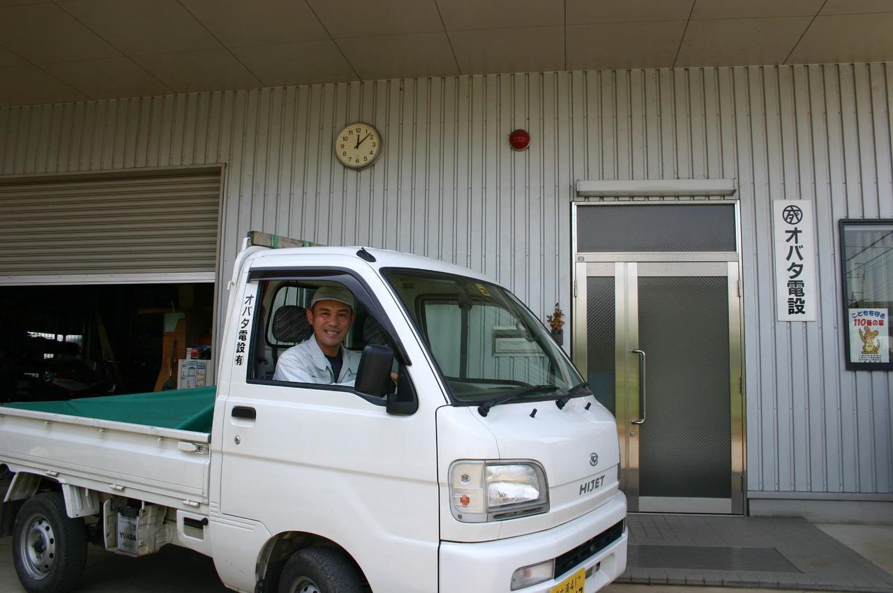

月次巡回監査
☆毎月お客様を訪問し、会計処理チェック及び指導、月次決算による最新業績確認を行います
- 会計処理チェック及び指導
- 予算と実績の対比による会社最新業績の確認
- 社長と数字をもとに経営分析、経営改善、資金繰りなどを話し合う
ホームページをご覧いただき、誠にありがとうございます。弊事務所は、
税理士事務所です。社長のために弊事務所で、何かお手伝いできることはありませんか？お気軽にお問い合わせください。
経営者と二人三脚でお役に立ち、会計で会社を強くします
はじめまして、平成２１年１月に茨城県つくば市で会計事務所を開業しました。税理士の石嶋正明です。
私は茨城県下妻市生まれの４０歳です。これまで東京で働いておりましたが、税理士として独立開業するにあたり、生まれ育った郷里である茨城で中小・零細企業、個人事業主の皆様のお役に立ちたいと思い、つくば市で開業することにしました。
今は不況です。会社経営は大変厳しい状況にあると思います。私もこの時期に独立開業は大変ですねと言われることもあります。ただ、私はあえてこう思うのです。厳しいけれども今こそ従来の会社経営を変えるチャンスであると。今まで会社経営についてあまり考えなかったが、今はいやでも考え、知恵を絞っていることでしょう。この考えをぜひとも経営改善に生かしてほしいと思います。
そのお手伝いをするのが、私たち税理士です。今こそ会社に経営助言できる税理士が求められています。私は、経営者と二人三脚でお役に立ち、会計で会社を強くして、会社が元気になることをバックアップしていきます。
また、私と同様に開業したばかりの経営者、これから開業しようとしている方、仕事は違えど独立開業することは大変であり、夢と不安を抱えながら日々頑張っていると思います。私も思いは同じです。税理士として開業まもない方々を応援し、ともに成長、発展していきたいと思います。
弊税理士事務所は、
事務所です。
中小企業のビジネスドクターとして、経営者の皆様を全力でサポートします
☆毎月お客様を訪問し、会計処理チェック及び指導、月次決算による最新業績確認を行います
☆経営計画の作成支援及び決算納税予測・対策を行います
☆決算書、税務申告書等の作成します
☆税務調査の立会い・税務相談
☆その他
税理士を探している方々にとって、税理士をどうやって選べばいいんだろう？という素朴な疑問があると思います。そこで、ここでは、私が考える税理士を選ぶときのポイントについて、書いてみたいと思います。私が考えるというように、あくまで一経営者としての私見ですので、その点をご了承ください。
会社の内実をさらけ出し、長い付き合いになるのだから、相手との相性は意外と大事です。遠慮せず気軽に質問できそうな雰囲気か、お互いに信頼関係を築けそうか、悩みなどの相談等を親身に聞いてもらえそうかなど、長期的にビジネスパートナーとして付き合っていけるかどうかを、直接面談して判断することをお勧めします。
税理士に申告書の作成や帳簿の記帳をただお願いするだけではもったいないと思います。例えば、１年間まとめて会計処理をして、確定申告ができればＯＫというのでは、会社の経営には役立ちません。（どんぶり勘定でいくら儲かっているかが後でしかわからないので、役立たないし、すでに打ち手もありません）
それより、毎月会計処理をして、タイムリーな会社業績を把握すれば、今後の会社経営をどう修正すればいいのかなど、いろいろ手を打つことができます。また年間予算を立てれば、毎月予算と実績との対比ができ、現状把握ととも目標達成するための必要な手段もみえてきます。
税理士も専門サービス業ですから、会社が長期的に成長、発展することをサービス（ご支援）する仕事であると思います。税理士も会社の成長なくして成長なしなのです。
せっかく税理士に頼むのだから、後者のような会社経営（事業経営）に役立つ税理士を選択することをお勧めします。
税理士へ年間に支払う料金は委託業務内容と関係があります。以下でそれぞれ簡単に説明します。
●税理士への年間支払料金は、大まかな項目だけでいえば、月額顧問報酬、決算報酬（申告書作成料）、年末調整・法定調書関係報酬です。これらを合計した金額が年間顧問報酬金額になります。
料金は、年額で考えるべきだと思います。仮に月額顧問報酬が安くても、決算報酬などを合計すると、月額顧問報酬の高い方がトータルで安いという場合もあるからです。これらは各税理士事務所により料金体系が異なることによります。
●委託業務内容は、かなり細分化されていますので、ここでは料金に関係する一般的な項目について書きます。
①会計事務所の関与度合：毎月訪問、２ヶ月に１回訪問、３ヶ月に１回訪問、半年に１回訪問、１年に１回訪問（申告時のみ）などがあり、通常、毎月訪問が一番料金がかかります（ただし、会社経営にとってはベスト）。
②記帳代行の有無：帳簿を会社側で作成入力するか、それとも税理士事務所で作成入力（いわゆる記帳代行）するかにより料金が異なります。通常、税理士事務所へ記帳代行した方がその分料金がかかります。
③会社の規模（例えば売上高）および仕訳数(会計処理数）：会社の売上高が大きいほど、通常は仕訳数が多く、税理士事務所の業務時間が多くなるので、その分料金がかかります。なお、業種・業界により異なります。
④経営計画および決算予測などマネジメントアドバイス業務：会社の年間経営計画書作成への経営助言および支援、決算予測検討などによる経営助言などが標準業務となっていれば、その分料金がかかる場合があります（ただし、会社経営にとってはベスト）。
⑤担当者が誰であるか：税理士事務所で担当になる人が、税理士である所長なのか、ベテランの事務所職員なのか、中堅の事務所職員なのか、新人の事務所職員なのか等により料金に影響がある場合があります。例えば、税理士である所長が担当であれば、通常、料金は高くなります。これは、税理士である所長と新人の事務所職員とでは、通常、業務レベルが違うからです。
⑥給与計算の有無：通常、給与計算は会社側が行いますが、税理士事務所に給与計算を委託する場合には、その分料金がかかります。
以上、上記項目が料金に関係する一般的な項目となります。なお、税理士事務所により異なるので、あくまで参考と考えてください。
料金と委託業務内容はリンクしており、その内容により、年間の税理士への支払金額が異なります。つまり、自分の会社に合わせた委託業務内容により料金を考えることが必要になります。単純な支払総額で税理士選定の判断をするのではなく、委託業務内容をよく考えた上で料金を考えることをお勧めします。なお、独立開業など創業まもない会社を対象に、期間限定で料金を減額してくれる場合もありますので、そういうケースでは、ざっくばらんに税理士にご相談してみてもいいと思います。
会社経営と会計についての14の質問。気になる項目をクリックしてご覧ください。
顧問先の社長様より、いただいたお言葉をご紹介します

小幡 将秀 様
石嶋税理士は私と同級生で、地元中学校では一緒に野球部に所属していました。高校も一緒で、卒業後はお互い会う機会はありませんでしたが、一通の税理士事務所開業の葉書の挨拶でお付き合いが始まりました。
ここ最近売り上げが減少傾向で、毎年赤字決算が当たり前の状況でしたが、石嶋税理士にお願いして、普段からしっかりと会社の利益を考えて工事の見積もりをするようになりました。又、予算の厳しい案件では今まで安請負していましたが、不安な時は石嶋税理士に相談して、最初から赤字の案件は受注しない事にしました。
他にも銀行との付き合いや税金のこと等メールで質問すると的確なアドバイスを頂いております。一昨年までの赤字決算が昨年度は黒字決算となり、不景気の建設業界でも厳しいながら若い力で商売を継続しております。
今後とも良き経営のアドバイザーとして宜しくお願いします。
アクセス・所在地のご案内
| 名 称 | 石嶋税務会計事務所 |
|---|---|
| 代表者 | 税理士 石嶋 正明 |
| 所在地 | 〒305-0031 茨城県つくば市吾妻3-12-12 ロイヤル松見102 |
| 電話番号 | 029-828-8115 |
| FAX番号 | 029-828-8116 |
| URL | https://www.ishijima-tax.jp/ |
| アクセス | つくばエクスプレス「つくば駅」 Ａ２出口より徒歩10分 車でお越しの方は、当事務所前に駐車場あります |
つくば市、下妻市、常総市、筑西市、つくばみらい市、土浦市、牛久市、龍ヶ崎市、守谷市、石岡市、かすみがうら市、桜川市、坂東市、他茨城県全域、東京都、千葉県、埼玉県、栃木県
石嶋税務会計事務所では、中小企業のビジネスドクターとして、独立開業、黒字化経営をご支援します！！「会計で会社を強くする」という信念のもと、中小企業の親身な相談相手として経営者の皆様を全力でサポートしていきます。敷居の高くない相談しやすい会計事務所です。お気軽に電話(ﾒｰﾙ)でお問い合わせください。